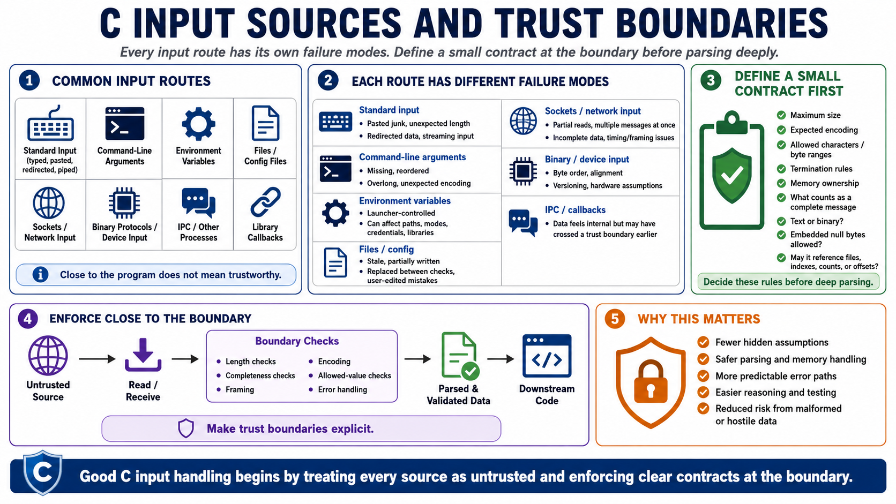

Understanding C Input Sources
Connecting to LMS... Progress: in progress

Narration
A C program can receive input through many different routes, and each route has its own failure modes. Standard input may be typed by a person, pasted from a terminal, redirected from a file, or streamed from another process. Command-line arguments may be missing, reordered, extremely long, or encoded in ways the program did not expect. Environment variables can be controlled by the process launcher and may influence paths, modes, credentials, configuration, or library behavior. None of these sources should be used just because they appear close to the program.
Files and configuration files are common input boundaries. They may be stale, partially written, replaced between checks, or edited by a user who does not understand the expected format. Sockets add timing, framing, and partial-read problems: the program may receive only part of a message, multiple messages at once, or data that never completes. Binary protocols and device input introduce byte order, alignment, versioning, and hardware-specific assumptions. Inter-process communication and library callbacks can be especially subtle because the data may feel internal even when it crossed a trust boundary earlier.
For every source, establish a small contract before parsing deeply. Decide the maximum size, expected encoding, allowed characters or byte ranges, termination rules, ownership of memory, and what counts as a complete message. Decide whether the input is text or binary, whether it can contain embedded null bytes, and whether it is allowed to reference files, indexes, counts, or offsets. These assumptions should be enforced close to the boundary. When a boundary is explicit, downstream code can operate on validated facts instead of guesses.